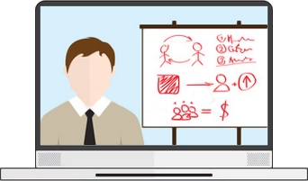

Your favorite radio
Create your own radio station!
It's simple!
It's much harder to do it right!
More than 500 new radio stations appear on online platforms such as YouTube every month. And only a few of them become popular and bring significant profit. What's the secret? What is the formula for success? Find out at the upcoming two-day FREE intensive!
To learn more
What awaits you in our intensive?
2 free full-fledged training webinars, where:
In just two free webinars, we will teach you how to: create your
own online radio with our franchise

We will show you how to properly optimize your website and make it
attractive to search engines. Only fresh, professional and relevant information!
You will learn what “good indexing”, “high traffic”, “stable
increase in visitors”, “TOP for queries” are and, what is much more important, how to
achieve all these indicators!